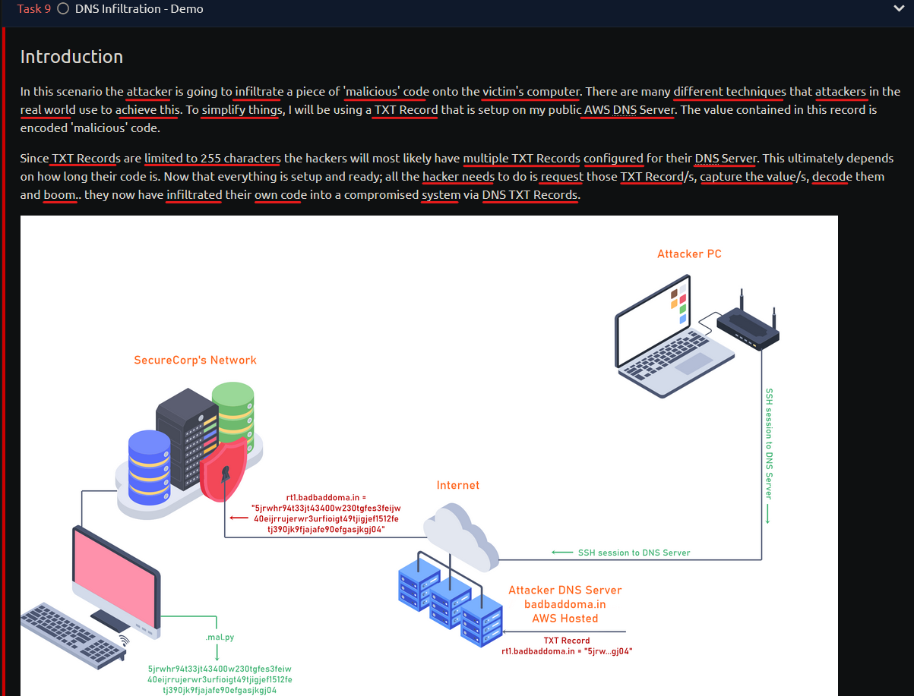

# tekrar et -2
DNS Manipulation
kaynak: https://tryhackme.com/room/dnsmanipulation

through = vasıtasıyla
*Ayrıca, DNS kayıtları Cloudflare'ın DDoS koruması gibi bir hizmet tarafından proxy ediliyorsa, bazı senaryolarda DNS tarafından döndürülen IP adresinin her zaman kaynak sunucunun IP adresi olmayacağını belirtmekte fayda var.
kaynak: https://www.cloudflare.com/learning/dns/glossary/dns-zone/
Türkçe (DNS Zone)
DNS bölgesi(zone), belirli bir kuruluş veya yönetici tarafından yönetilen, Etki Alanı Adı Sistemindeki DNS ad alanının belirli bir bölümüdür. DNS bölgesi, yetkili ad sunucusu gibi DNS bileşenlerinin daha ayrıntılı denetimine izin veren bir yönetim alanıdır.
Detaylı Türkçe kaynak için: https://www.hosting.com.tr/blog/dns/



infiltrate=sızmak